مفاهیم ICT
پیشبینیهای انحراف معیار (STDV)
نحوه استفاده از پیشبینیهای انحراف معیار: راهنمای کامل انواع پیشبینیهای انحراف معیار در سبک ICT
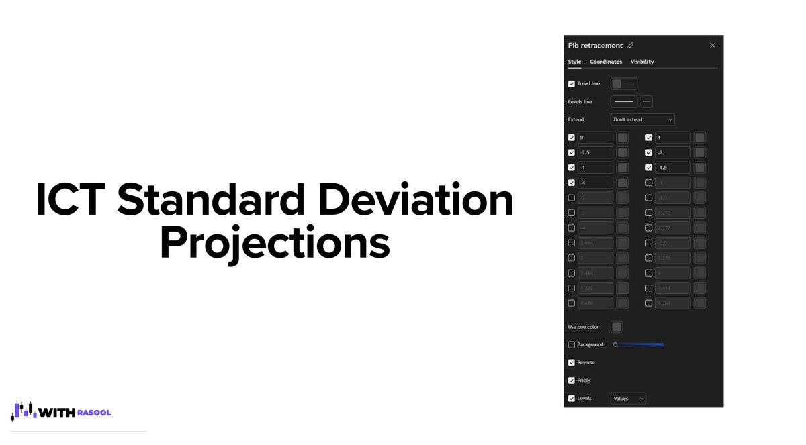
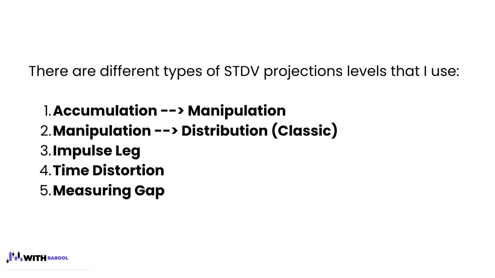
توضیح اساسی انحرافات معیار، هدف بالقوه MMXM است. به عبارت دیگر، ما از STDV برای پیشبینی ناحیه بازگشت یا اصلاح استفاده میکنیم.
مرحله انباشت
مرحله انباشت جایی است که «پول هوشمند» موقعیتها را جمعآوری میکند تا چارچوبی برای مرحله توزیع ایجاد کند. در طول این مرحله، حرکت قیمت معمولاً در محدوده محدود، با نوسانات کم و حرکات قیمتی نسبتاً کوچک است.
ما میتوانیم شاهد انباشت (تثبیت) در بالا/پایین یا نزدیک قیمت بازگشتی باشیم.
در فاز انباشت، شاهد تحکیم (رنج زدن) قیمت هستیم که طی آن نقدینگی زیادی ایجاد میشود؛ سپس یک حرکت کاذب (دستکاری) رخ میدهد تا تمام آن نقدینگی جمعآوری شود و پس از آن، شاهد SMR (شکست ساختار بازار) هستیم.
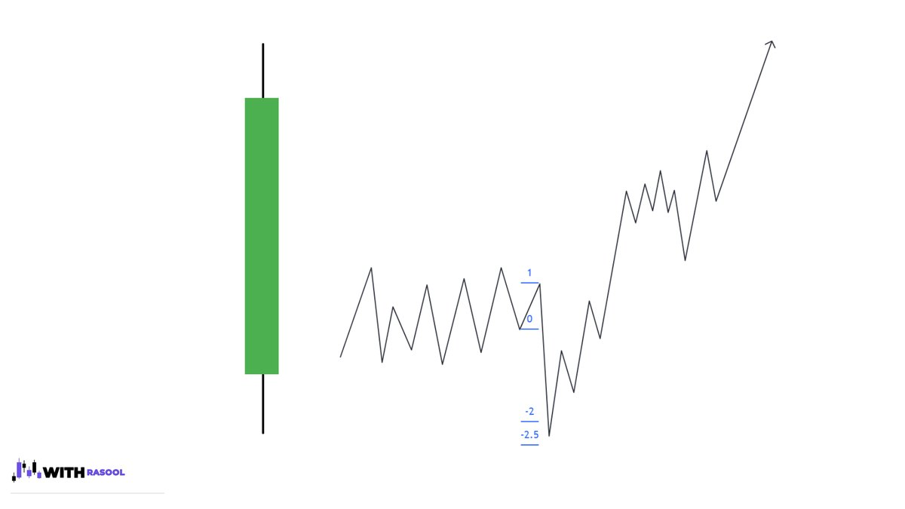
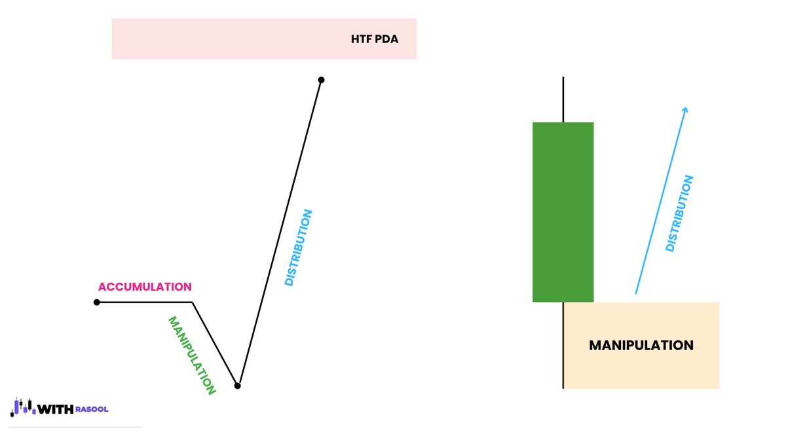
Standard Deviation: Accumulation Phase
انحراف معیار: مرحله انباشت
در طول مرحله انباشت (Accumulation)، بازهٔ مشخص و قابلمشاهدهای که از پایینترین/بالاترین نقطه تا سقف/کفِ مقابل آن اندازهگیری میشود، نشاندهندهٔ حرکتِ دستکاری (Manipulation) خواهد بود.
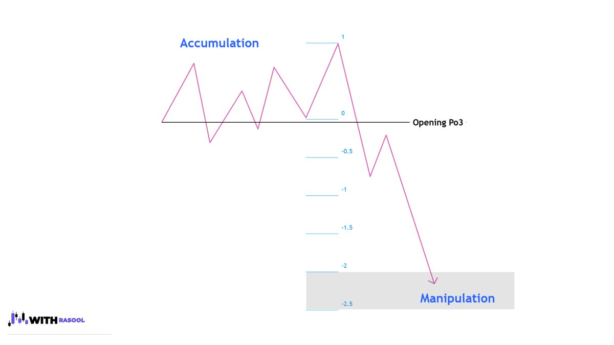
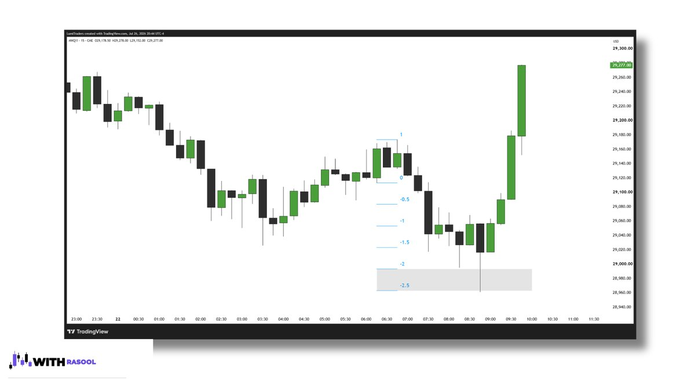
آیا میتوانم با حرکت از تثبیت معامله کنم؟
بله، میتوانید با حرکت از تثبیت به سمت سطح HTF معامله کنید، یا محدودههای ۲ STD و ۲.۵ STD را هدف قرار دهید.
بهترین نقطه ورود برای این وضعیت چیست؟
بهترین نقطه ورود معمولاً تغییر در وضعیت تحویل (CISD) / بلوک سفارش (OB) است که نزدیک به سطح ۵۰٪ تثبیت تشکیل میشود.
ممکن است شاهد شکست قیمت در بالا یا پایین تثبیت باشید و سپس بلافاصله به محدوده برگردید. اغلب اوقات، شاهد این اصلاح سریع به محدوده هستیم تا تغییر در وضعیت تحویل نزدیک به سطح ۵۰٪ انباشت را دوباره آزمایش کنیم.
با این حال، این بدان معنا نیست که باید منتظر بمانیم تا قیمت قبل از جستجوی آزمایش مجدد OB، بالاتر یا پایین تثبیت را بشکند.
آزمایش مجدد میتواند در خود تثبیت اتفاق بیفتد.
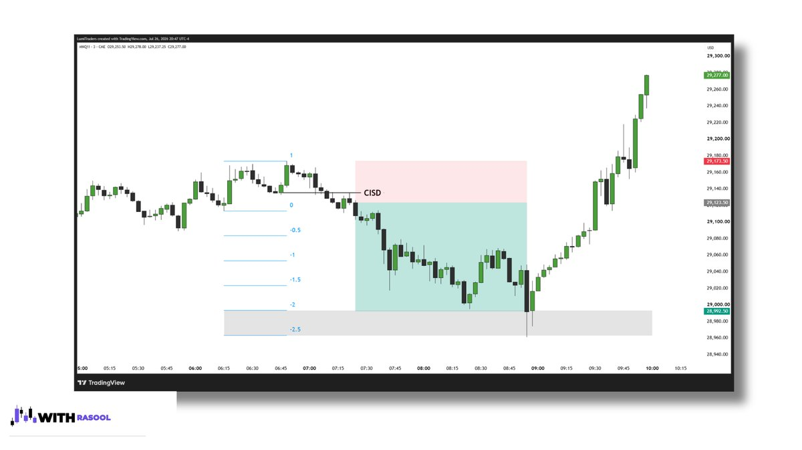
Manipulation Leg
پایه دستکاری
دستکاری جایی است که مهندسان پول هوشمند قیمت را برای ایجاد نقدینگی تغییر میدهند. آنها این کار را با بالا یا پایین بردن قیمت در مرحله انباشت انجام میدهند.
به عبارت دیگر، دستکاری جایی است که حرکت جعلی در جهت مخالف یک PDA کلیدی HTF رخ میدهد. اساساً، این فتیله (بالا/پایین) است که در حال توسعه است.
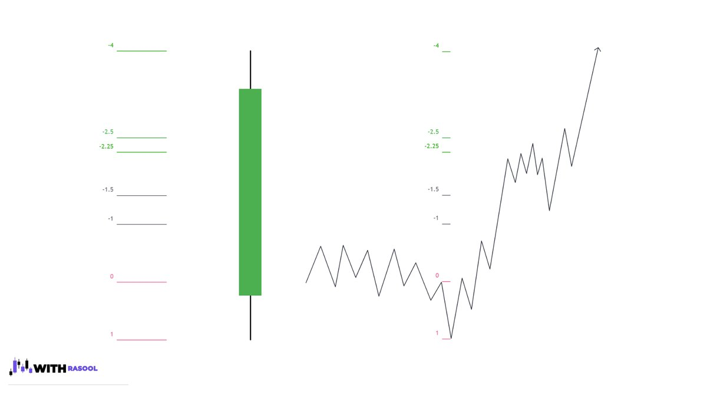
مرحله دستکاری معمولاً در محدوده انحراف معیار ۲ تا ۲.۵ از پیشبینی پای تثبیت رخ میدهد.
چگونه بفهمم که مرحله دستکاری چه زمانی تمام شده است؟
به صورت MMXM فکر کنید. همیشه.
من به دنبال عناصر زیر هستم:
- سطح HTF
- LTF CISD
- تغییر ساختار بازار LTF (MSS)
- واگرایی SMT (اختیاری)
در حالت ایدهآل، همه اینها در محدوده STD ۲ تا ۲.۵ رخ میدهد.
برای تأیید انتقال از یک برنامه به برنامه دیگر، باید سطح HTF، LTF CISD و LTF MSS داشته باشیم. تنها پس از برآورده شدن این شرایط میتوانم پیشبینی پای دستکاری را رسم کنم.
من از آخرین پای قبل از SMR، که توسط CISD و MSS تأیید شده است، به عنوان پای دستکاری خود استفاده میکنم. این پای آخر، مبنای تصویرسازی پای دستکاری من میشود و در حالت ایدهآل، محدوده تصویرسازی باید در محدوده انحراف معیار ۲ تا ۲.۵ قرار گیرد.
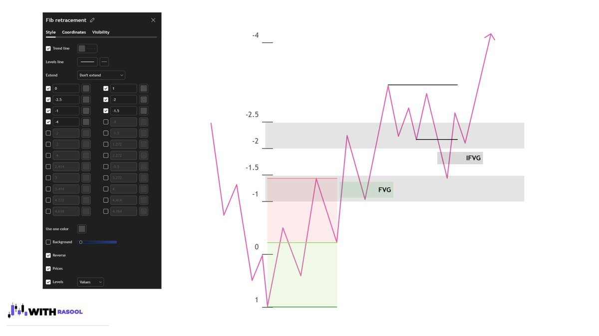
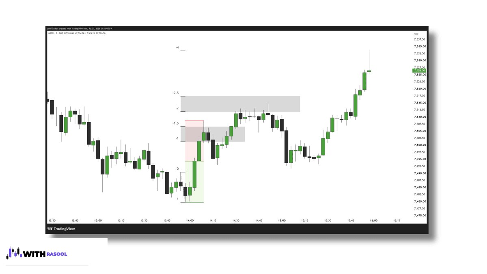
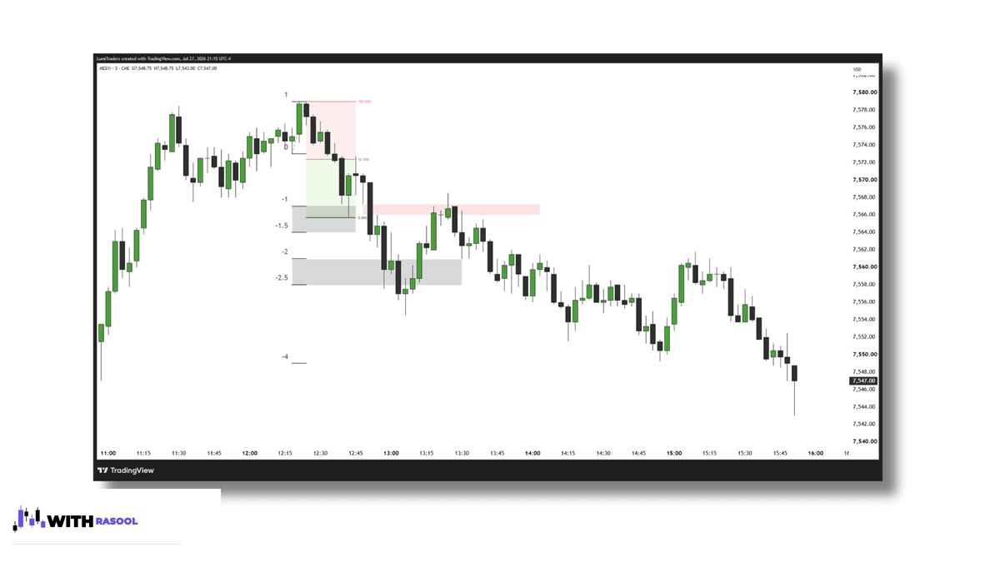
در ادامه به بررسی مفاهیم دیگر STDV خواهیم پرداخت.
نظرات
برای ثبت نظر ابتدا وارد شوید یا ثبتنام کنید.